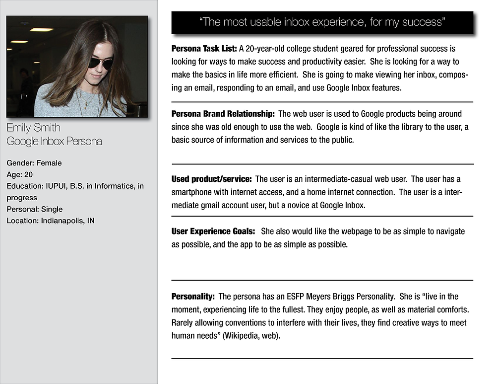

Project Overview
The Problem: Inbox is a new application launched by Google on the existing Gmail platform. Motive behind Inbox is to provide users with the capability to effectively organize their mails rather than just been any other mailing application. Enhanced features in Inbox include ability to snooze messages, group emails into "Bundles" , set reminders, highlights and much more.
Our Solution: We initiated our study to perform an expert review on the application. Internal Walkthrough in the form of expert review was followed by a Usability Test to study its effectiveness from user-centric design perspective.
My Role:
- UX Researcher
Tool:
- Balsamiq
- Photoshop
- Camtasia Studio 9
Methods:
- Usability Test Plan
- Cognitive Walkthorugh
- Hueristic Analysis
- A/B testing
Test Plan
We initiated our study to perform an expert review on the application. Internal Walkthrough in the form of expert review was followed by a Usability Test to study its effectiveness from user-centric design perspective. Our ‘Usability Study Plan’ consisted of an introduction script, informed consent form, facilitator script, background questionnaire, task list, post-task questionnaire and System Usability Scale.
Internal Walkthrough
Based on the findings from our internal walkthrough we designed the task list to address the pain points in using the new features as well as testing the efficiency of basic features of a mailing application. As a team, we realized that the basic functions served by Google Inbox were challenging to a new user and had a learning curve. Hence, we decided that we will limit the scope of this study to the usability evaluations of the basic functionalities such as
- Exploring Google Inbox
- Opening mails
- Responding to mails
- Setting bundles.
- Setting Reminders

Target Audience
Our target audience was people who regularly used emails asa mode of communication. We recruited 10 Participants for usability studies. The participants had a mixture of power users who had been using Google Inbox since its release, and some new users who used other mailing platforms such as Gmail, Yahoo or Hotmail etc.
Usability Study Plan
Our Usability Study consisted of Welcome Script, InformedConsent Form, Task List, Facilitator Script, System Usability Scale.
Testing Strategy: A/B Testing
We wanted to conduct A/B testing to evaluate the desktop version of Google Inbox vs the Mobile App version. From our ethnographic studies and secondary research, we learned that 65% of emails were opened on asmartphone or tablet. However, from our interviews with users, we learnt that they were more comfortable using the desktop website to compose and send mail.With many issues that we found and having recommendations for them, we concluded the project by calculating an SUS rating of the Desktop version of Google Inbox with 59/100 and the Mobile version with 61.25/100.